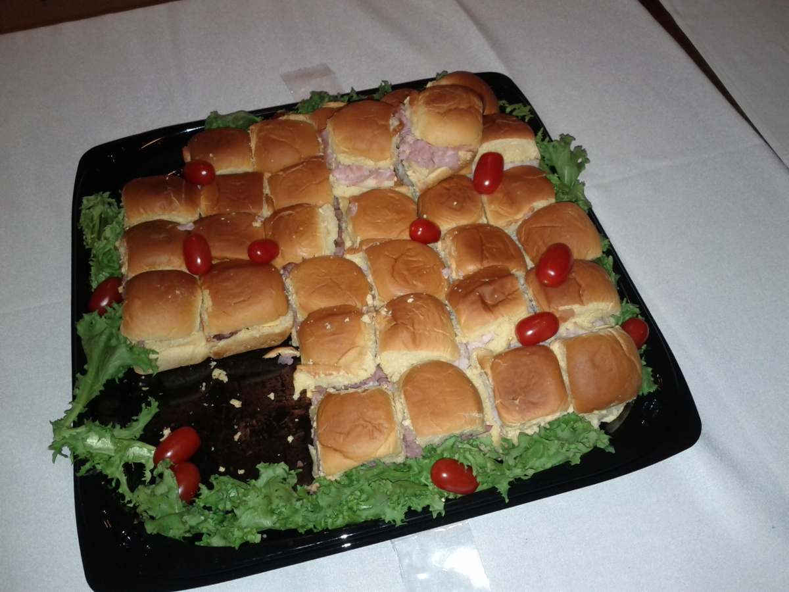
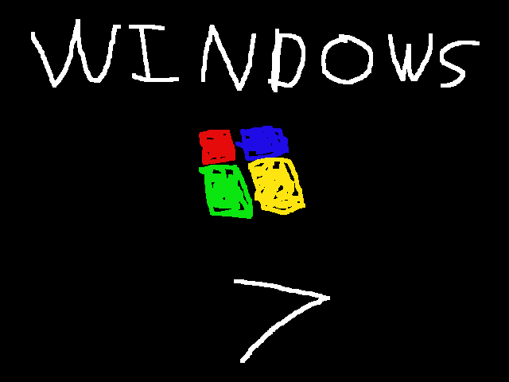

This web site is a stunning example of brutalist web design using Brutestrap.
When not even Prof. Dr. Style can make your web site cool, you need Brutestrap.
The first (and only) step is to throw elements on the screen, without worrying too much about how they work together.
This screen has elements.
The secret to great brutalist UX is contrast. Make sure you also incorporate motion to help your users focus on what's really important on the screen.
The things here are obvious. Brutestrap includes built-in <blink> tag ployfill.
As you change the size of your browser, Brutestrap web sites respond by becoming smaller or larger, and occupying more or less of your screen.
If you had a phone that you could change the size of, that would work too.
Brutestrap web sites have Themes. Resize this page to see some themes in action.
Brutestrap crams your images into the space available for them, without regard for petty aesthetic concerns.
Both JPG and PNG images are supported. Other types of images are also supported but are frivolous and unnecessary.
Click here (or "Save Link As") to install Brutestrap and make your web sites acceptable.
(C) 2018 Novak Distributed